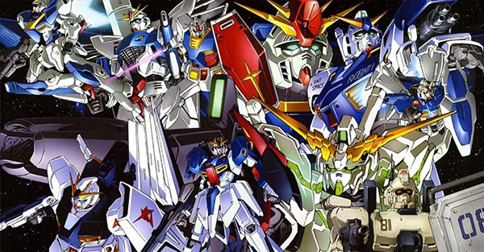

MOBILE SUIT GUNDAM
กันดั้มที่ควรติดตามดู,Dec 7, 2017
ซีรี่ย์กันดั้ม
เนื่องด้วยความที่เป็นอนิเมะที่ออกมามากมายหลายภาค จึงเกิดคำถามว่า “แล้วเราจะดูภาคไหนกันดี?”
อันดับ 10 Mobile Suit Gundam UC [unicorn]

กันดั้มภาคนี้ เป็นภาคที่สร้างจากนิยาย และได้ “คาโตกิ ฮาจิเมะ” เซียนด้านการออกแบบหุ่นยนต์ที่สร้างผลงานมามากมายตั้งแต่ยุค 90 มาออกแบบ บวกกับความเก่งเข้าขั้นโกง+ความเท่ของยูนิคอร์น กับเดสทรอยโหมด + สกิลพระเอกของกันดั้มยูนิคอร์น ก็ทำให้หลายๆคนเลือกภาคนี้แนะนำให้ดูกัน
อันดับ 9 Mobile Suit V Gundam
ยุคท้ายๆของจักรวาล U.C. ที่จับเอาเทคโนโลยีหลายๆอย่างมายัดในกันดั้มพระเอกของเรื่อง พร้อมกับการปูภาพฟีลกู้ดของเรื่อง ก่อนที่โทมิโนะ คนเขียนบท จะเชือดตัวละครสาวๆทิ้งเป็นผักปลา 555+ เคยได้ยินว่าในยุคที่ออกฉาย มีข่าวว่าแฟนๆก่นด่าสาปแช่งตาลุงโทมิโนะยันซีรี่ส์ฉายจบอะ
อันดับ 8 Mobile Suit Gundam THE ORIGIN
อันนี้เป็นภาคที่ขยายความเหตุการร์ก่อนกันดั้มภาคแรกสุด เรื่องราวเบื้องลึกเบื้องหลังของสงคราม ตัวละครต่างๆในช่วงก่อเกิดสงครามหนึ่งปี เราจะเน้นโมบิลสูทรุ่นโปรโตไทป์มากมาย เอาเป็นว่าภาคนี้ ก็แนะนำให้ดู แต่ก็ทำใจนิดนึงว่าค่อนข้างเนือยๆไปในบางจังหวะนะ
อันดับ 7 Mobile Suit Z Gundam
เชื่อว่าแฟนๆกันดั้มในไทยคงไม่มีโอกาสได้ดูภาคนี้แบบเวอร์ชั่น TV 50 ตอนจบ แต่จะไปดูในหนังโรง New Translate 3 ภาค ที่เอาเนื้อหาทั้งหมดมาตัดต่อใหม่ ซึ่งก็โอเคนะครับ ในไทยมี LC โดยทาง DEX จบพอดี แม้ว่าฉากจบของเวอร์ชั่นนี้จะต่างจากของ TV ก็ตาม…
อันดับ 6 Mobile Suit Gundam: Iron-Blooded Orphans
อันนี้เป็นภาคที่ค่อนข้างใหม่ และมีการนำเสนอที่ดุเดือด เข้มข้น ดราม่าฆ่ากระจายตายกันแทบทั้งเรื่อง ดีไซน์หุ่นเท่ ภาพสวยคมกริบ+เพลงเพราะ ไม่แปลกใจที่หลายๆคนจะเริ่มต้นจากภาคนี้
อันดับ 5 Mobile Suit Gundam SEED DESTINY
ภาคต่อของกันดั้ม ซี้ด เอาจริงๆนะ ไม่รู้ติดอันดับมาได้ไง คือมันเป็นภาคต่อนะ ฮัลโหลววว ถ้าไม่ดูภาคแรกมาก่อน มันจะงงๆเอาได้เหมือนกันว่าตัวละครนี้ทำไมต้องเป็นแบบนั้นแบบนี้ แต่ยอมรับว่าภาคนี้ สเกลพลังหุ่นเข้าขั้นเก่ง + โกงหลายๆตัวเลย
อันดับ 4 New Mobile Report Gundam W
กันดั้มจากยุค 90 ที่มีคะแนนโหวตดีที่สุดของโพลสำรวจนี้ ด้วยคาแรคเตอร์ต้วละครหนุ่มหล่อบอยแบนด์ ที่มีลักษณะนิสัยต่างกัน หุ่นรบที่ดีไซน์ออกมาตรงกับคาแรคเตอร์ อีกทั้งยังมีประเด็นการเมือง ที่ซับซ้อนวุ่นวาย และเข้าใจยาก ก็ยังทำให้กันดั้มวิง เป็นที่พูดถึงมาจนถึงทุกวันนี้ ใครจะเริ่มดูภาคแรกที่กันดั้มวิง ก็เชิญครับ แต่แนะนำว่าดูจบ ให้ตามต่อใน OVA Endless Waltz / มังง Battle of Pacific / มังงะ Glory of Looser และจบที่นิยาย Frozen Teardrop ด้วยจะสมบูรณ์สุดๆแล้ว
อันดับ 3 Mobile Suit Gundam 00
ไม่ต้องสงสัยเลย กับกันดั้มภาคที่โด่งดังที่สุดอีกภาคของยุค 2000 กับ กันดั้มดับเบิ้ลโอ หลายๆคนเลือกภาคนี้เป็นภาคแรกที่ดู จะเพราะว่าหุ่นเท่ ตัวละครหล่อ หรือเพลงเพราะภาพสวย แต่ก็ยอมรับนะว่าภาคนี้เนื้อเรื่องหนักหนา และมีโมเม้นท์ชวนเหวอได้เยอะไม่แพ้ภาคก่อนๆเลย
อันดับ 2 Mobile Suit Gundam SEED
เก่ง เท่ เทพ มหาเทพคิระ ยามาโตะ กับจุดกำเนิดของ “กันดั้มยุคใหม่” กระแสกันดั้มกลับมาบูมสุด พีคสุดหลังจากที่นิ่งๆอึนๆมาในช่วงปี 90 พอเข้าปี 2000 กันดั้มซี้ดฉาย ปรากฏการณ์ทั่วญี่ปุ่นเลย จะบอกว่ากันดั้มซี้ดเองก็ได้อิทธิพลการเล่าเรื่องจากกันดั้มภาคแรกสุดมาไม่น้อย เดินตามรอยสูตรเก่า ที่นำเสนอบนเทคโนโลยีการทำอนิเมชั่นใหม่ๆ ลายเส้นหวานๆของ อ.ฮิราอิ ฮิซาชิ
อันดับ 1 Mobile Suit Gundam
ต้นตำรับของจักรวาลกันดั้มทั้งหมด กับอนิเมภาพสุดโบราณสเกลเพี้ยน แต่ถ้าไม่มีเรื่องนี้ กันดั้มเรื่องอื่นก็คงไม่เกิด ใครที่จะสตาร์ทเปิดโลกกันดั้มจากเรื่องนี้ ก็จัดมาได้เลย แต่ขอบอกว่าถ้าเราดูด้วยความเป็น”คนยุคนี้” มันก็จะขัดใจหน่อยๆ ในเรื่องงานภาพ กับจังหวะเล่าเรื่องที่มันเป็นการ์ตูนสไตล์เก่าจากยุค 70 ที่มีความวนซ้ำ อย่าว่าแต่คนญี่ปุ่นเลย คนไทยเราเองหลายๆคนเริ่มจากภาคนี้เหมือนกัน เชื่อว่าหลายๆคนที่ได้ดู ก็จะยิ่งชอบ เพราะอะไร…ไม่รู้เหมือนกัน 555+